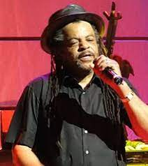
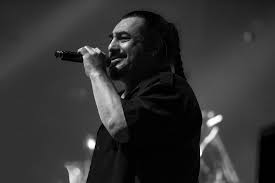
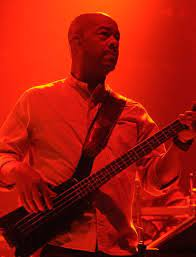

-
Ali Campbell (1978 – 2008)

Ali was lead singer in the UB40.
He was born in England on February 15th.
He left the band in 2008 sighting management issues.
He later joined with Astro and MIckey in 2013 to make the musoc album silhouette -
Astro (1980 – 2013)
Astro was born on 24th June in Birmingham.
He was among the founding members of UB40 and was part of the band until he left in November 2013. -
Brian Travers (1978 – present)

Brian deals with the saxophone and the horn arrangement.
twitter
He was born on February 7th. He is the amn behind the bands saxophone which is greatly recognised all over the world.
He is descried as a lover of art music and photography. Brian is a prolific lyricist and has had a major input in influencing the band’s many videos. -
Jim Brown (1978 – present)

James brown was born on 20th November.
His drumming has been a strong point for the band. He is described as the bands most talkative and radical commentator on social and political matters on social media.
He is also understood to have a very diverse taste in music. -
Michael Virtue (1979 – 2008)

Michael, commonly known as mickey was born in Birmingham on January 19th.
He was among the founder members of the band but then left in 2008 -
Norman Hassan (1978 – present)
Norman was born on 26th january in Engalnd.
He was a carpet fitter before he decided to join the ultra succeful UB40 band.
His parents are of Welsh and YEMENI descent and he is famous for his onstage dance moves. -
Robin Campbell (1978 – present)

Robin was born in Birmingham, England, on December 25th.
He is the lead guitarist for the band.
He is a brother to singer Ali Campbell, David Campbell, and Duncan Campbell. -
Earl Falconer (1978 – present)
Earl was born on Janury 24th, in england.
He is a bassist at the UB40 band. HE was brother to the bands producer who was killed in aroad accident.
This accident led to Earl serving six months sentence in jail.
He went to the Mosely Road School Of Art and was working as a plasterer before hejoined the band.
He is the co-founder of the record label Circus Records, home to artists like Doctor P.